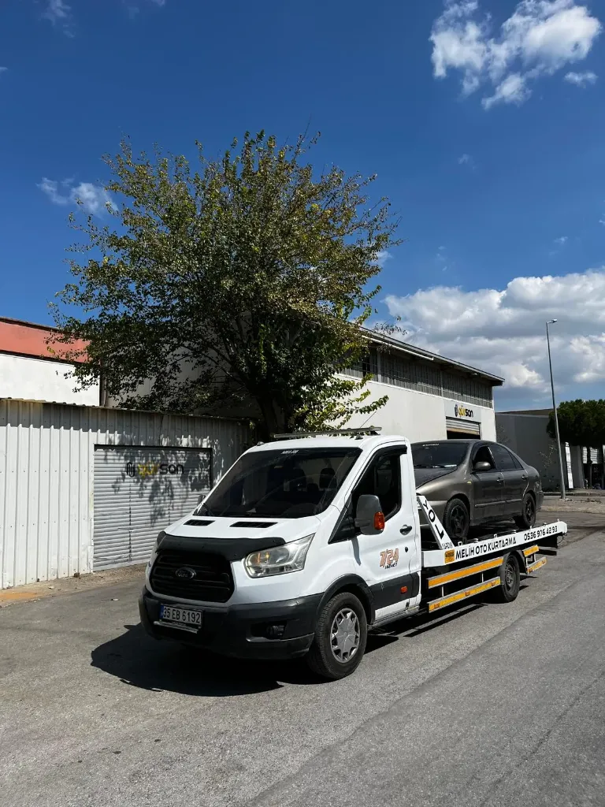
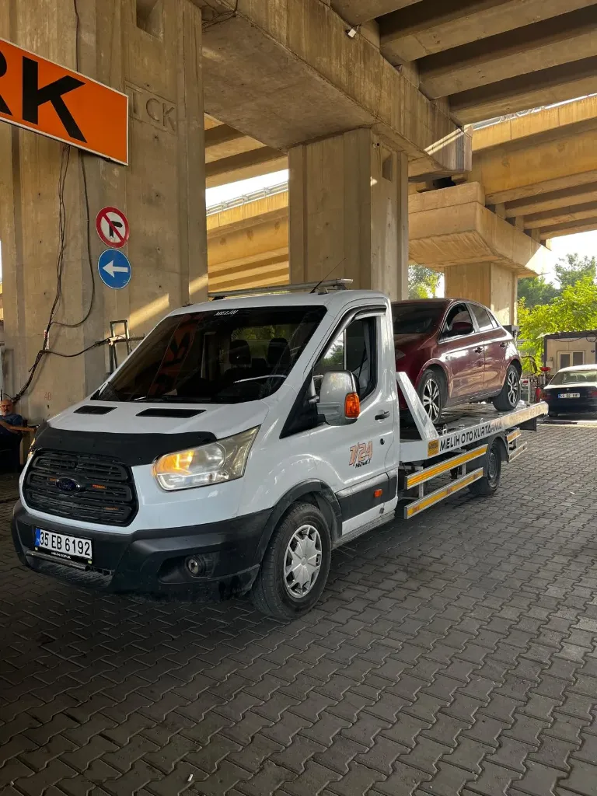
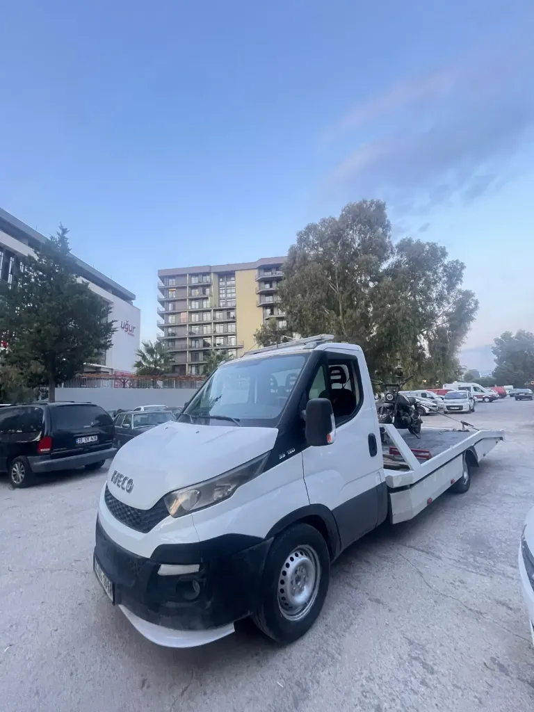
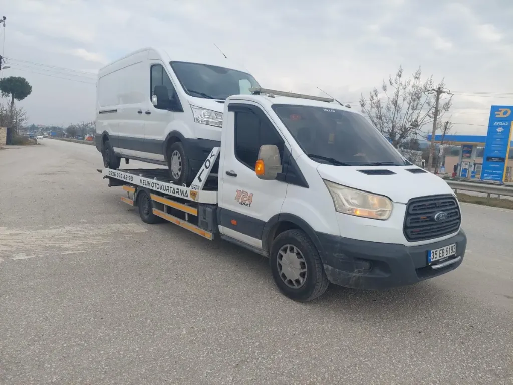
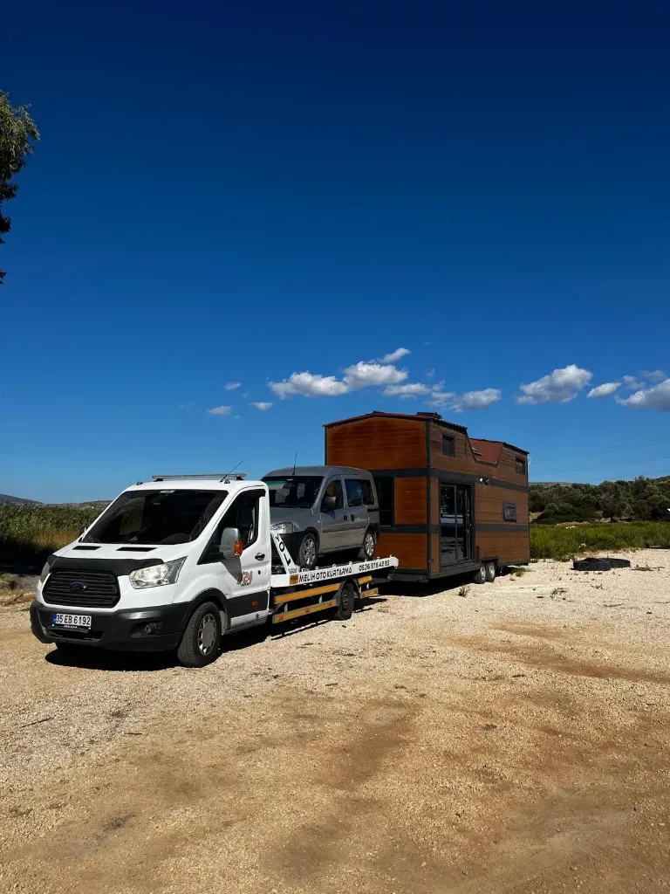
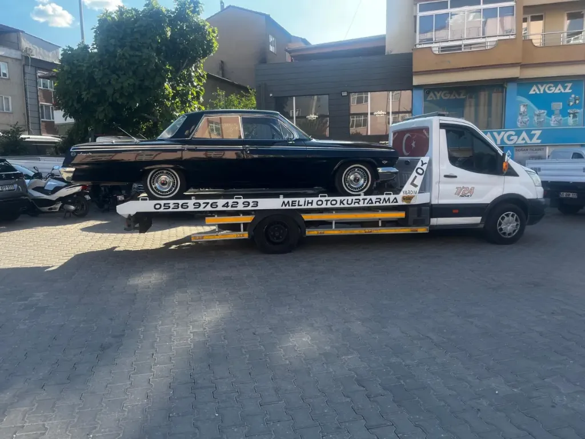

1 / 22
Karabağlar, Bornova, Buca, Karşıyaka, Konak, Gaziemir ve tüm otoyol bağlantı noktalarında hazır bekleyen nöbetçi araçlarımızla İzmir'in her noktasına anında müdahale ediyoruz. %100 kaskolu, sigortalı ve cep yakmayan şeffaf fiyat garantisi.
Doğrudan Çekici Kaptanı: 0536 976 42 93 (Santralsiz, Anında Bağlantı)
Adres veya sokak ismi tarif etmenize hiç gerek yok! Aşağıdaki butona dokunduğunuzda telefonunuzun GPS uydusu tam enlem ve boylamınızı belirler, tek tıkla çekici kaptanımızın WhatsApp ekranına nokta atışı harita linki olarak gönderir.
Aracınızın türünü, durumunu ve bulunduğunuz ilçeyi seçin; size özel en uygun net fiyatı ve varış süresini anında WhatsApp'tan iletelim.
💡 Bilgileriniz otomatik WhatsApp mesajına dökülür. Telefonda ne konuşulduysa yerinde kuruşu kuruşuna aynı ücret geçerlidir.
Tüm fotoğraflar İzmir sahasında Ford Transit (35 EB 6192) ve Iveco (35 AG 1098 & 35 CHV 787) araçlarımızla bizzat çekilmiştir.
Her araç tipine ve acil duruma uygun hidrolik kayar kasa ve vinç donanımlı araç filomuzla hizmetinizdeyiz.

İzmir'in hangi ilçesinde olursanız olun size en yakın nöbetçi çekicimizi 15 dakikada yönlendiriyoruz. Binek, hatchback ve sedan araçlarınız hasarsız şekilde gideceği adrese ulaştırılır.

Trafik kazası, teker kilitlenmesi veya şarampole kayma gibi kritik durumlarda hidrolik vinçli ve kayar kasalı araçlarımızla hasarsız kurtarma sağlıyoruz.

Motosiklet, spor otomobil ve basık araçlar için özel aparatlı taşıma. Ön tekerlek kitleme beşiği ve özel gergi kayışları ile sıfır çizik ve devrilme garantisi.

Ağır ve uzun şaseli ticari araçlar, servis minibüsleri, panelvan ve kamyonetler için özel güçlendirilmiş çekici platformumuzla güvenli taşıma yapıyoruz.

İzmir'den İstanbul, Ankara, Bursa, Antalya, Muğla ve Türkiye'nin 81 iline tekli veya çoklu araç, karavan ve tiny house transferi. Adresten alıp adrese güvenle teslim ediyoruz.

Antika ve klasik araçlar, spor otomobiller, tekne/bot ve özel yükler için 0536 976 42 93 hatlı Melih Oto Kurtarma filomuzla VIP hassasiyetinde hasarsız transfer.
Panik yapmayın. Çekici ekibimiz gelene kadar sizin ve sevdiklerinizin can güvenliği en önemli önceliğimizdir.
Aracınız arıza yaptığında hemen dörtlü ikaz lambalarınızı yakın ve imkan varsa aracı emniyet şeridine veya güvenli bankete çekin.
Şehir içinde aracın 30 metre, otoyol ve çevre yollarında ise en az 100-150 metre gerisine üçgen reflektör koyarak arkadaki araçları uyarın.
Özellikle otoyollarda asla araç içerisinde veya yol kenarında beklemeyin. Çelik bariyerlerin arkasına geçip güvenli alanda durun.
0536 976 42 93 numarasını arayın veya GPS konumunuzu gönderin. En yakın nöbetçi çekicimiz 15 dakikada yanınızda olsun.
Yolda kalan binlerce araç sahibine güvenli, hızlı ve şeffaf çekici hizmeti sunduk.
"Gece saat 02:30'da Bornova kavşağında radyatör hortumum patladı. Aradım, 12. dakikada Iveco çekici geldi. Telefonda ne fiyat söyledilerse kuruşu kuruşuna aynı aldılar. Helal olsun."
"Çeşme Otoyolu'nda ailemle tatil dönüşü lastiğimiz yarıldı. Sitedeki tek tuşla GPS konum gönderme özelliğini kullandım, hiç adres tarif etmeden nokta atışı buldular. Çok profesyoneller."
"Basık spor aracım vardı, tamponu sürterler diye çok korkuyordum. Özel eğimli rampa ile sıfır temasla yüklediler. Karabağlar sanayiye kadar hasarsız teslim ettiler."
"Buca Şirinyer'de kaza yaptık, sağ tekerlek yamulmuştu gitmiyordu. Vinç aparatıyla aracı milim hasar vermeden kaldırdılar. Kaptan çok kibar ve tecrübeliydi."
Çekici çağırırken aklınıza takılabilecek tüm konuları şeffaflıkla yanıtladık.
Aşağıdaki ilçelerden veya otoyollardan birine tıklayarak o bölgedeki hazır nöbetçi çekicimizle doğrudan iletişime geçebilirsiniz.
İzmir'in neresinde olursanız olun nöbetçi çekici kaptanımız doğrudan çağrınıza yanıt verir.